だし
dashi
天然だし
当店のだしは塩も粉末醤油も添加物も
一切使用していない完全な天然だしです。
厳選された節、昆布、椎茸をブレンドし、
素材の甘味をそのまま活かした、
濃厚な味わいをお楽しみいただけます。
-
- 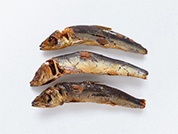
- うるめ節
- うるめ節は、イワシ系の中
では比較的クセがなく甘み
があります。
-
- 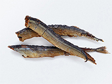
- さんま節
- サンマを原魚としています。
あっさりとした中に甘みも
感じます。はらわたが入っ
たままの製造なので、苦み
を感じることもあります。
-
- 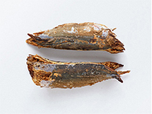
- むろあじ節
- ムロアジを原魚としており、
主に裸節で流通しておりま
す。黄色っぽい出汁色で、
甘み、コクがある点などサ
バにも似ておりますがサバ
よりまろやかで魚臭さが少
ないのが特徴です。
-
- 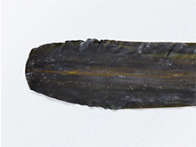
- 真昆布
- まろやかなで上品な味わいで
す。南茅部地区で採れる白
口浜の真昆布は、古くから
天皇家に献上されるなど品
質の高い昆布です。
-
- 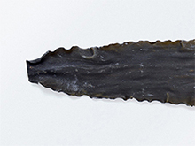
- 利尻昆布
- 出汁の透明度が非常に高い
ので、出汁をよりクリアに
とるのに使い易いです。昆
布の採れる礼文島、利尻島、
稚内の海岸部は塩分濃度が
高く、塩味のある昆布が育
つと言われています。
-
- 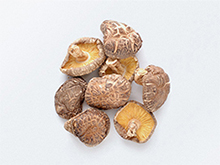
- 干し椎茸
- 鰹節や昆布と相性が良く、
旨み成分(グルニア酸)の
相乗効果が高いことからも、
出汁に加えると味の奥深さ
を感じます。
-
- 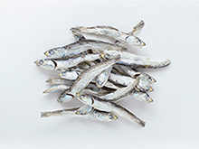
- 煮干し
- 10cm～12cmの大き目の片口
イワシの煮干しです。片口イ
ワシは最も生産量も多く、最
も流通している煮干しです。
味は、インパクトは強めで、
脂ものりやすく、力強くなり
ます。
-
- 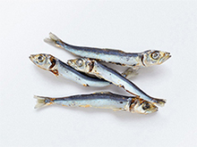
- うるめ煮干し
- ウルメイワシを原料とした
煮干しです。片口イワシに
比べると、クセがなく甘み
のある出汁がとれます。
お酒
sake ＆ wine
日本酒とワイン
野菜と同じ土地の水を使用した
日本酒とワインを提供しております。
同じ土地の野菜とお酒の相性は抜群と
古くから言われております。
瑞々しくまろやかな味わいをお楽しみください。
-
- 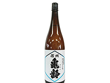
- 信州亀齢純米吟醸
- フレッシュ＆フルーティー、
ミネラル感いっぱいの透明感
を感じさせる飲み口。新酒ら
しいガス感もあり、最後はシ
ュッとドライにキレます。
-
- 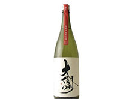
- 大信州
- 研ぎ澄まされた辛口ではなく
旨味もしっかり、香りもふわ
っと開く、大信州ならではの
透明感のある超辛口です。
-
- 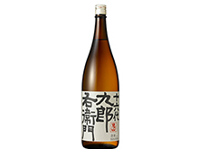
- 九郎右衛門
- 天然水の旨さに、しっかりした
酸味が乗り、加えて米の旨味と
甘味もあります。
-
- 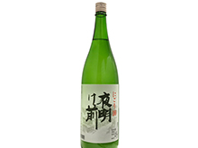
- 夜明け前
- 芳醇な香りはまるで夏の
メロンの様に瑞々しく、濃
厚な旨味は力強さを持ち、
最後に抜けていく酸味との
調和を取る事で食虫酒とし
ての役割をしっかりと果た
します。
-
- 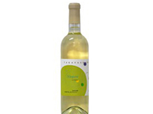
- ナイアガラ
- 甘く気品ある香りに豊かな
果実味と適度な酸味が調和
している爽やかな飲み口の
やや甘口白ワインです。
-
- 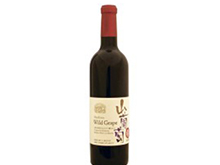
- エクセレント山葡萄
- 長野県下伊邦地方で栽培さ
れているヤマブドウは希少で、
個性的な味わいを持ちます。
野趣あふれる香り、深い色合
いと渋味、
そして酸味が特徴です。
-
- 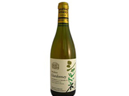
- エクセレントシャルドネ
- ワイナリーのある松川町増野地
区、標高800mのぶどう園で収
穫されたシャルドネで醸造され、
さらにフレンチオークの樽で熟
成。黄色く透明感のある色で樽
の熟成感を楽しむことができま
す。
-
- 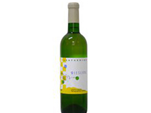
- リースリング
- 自社圃場で収穫したリースリング
を使用。リースリングらしい華や
かな香りとオイリーな雰囲気が折
り重なる。すっきりとした酸味と
果実味のバランスがよく飲みやす
いワインです。